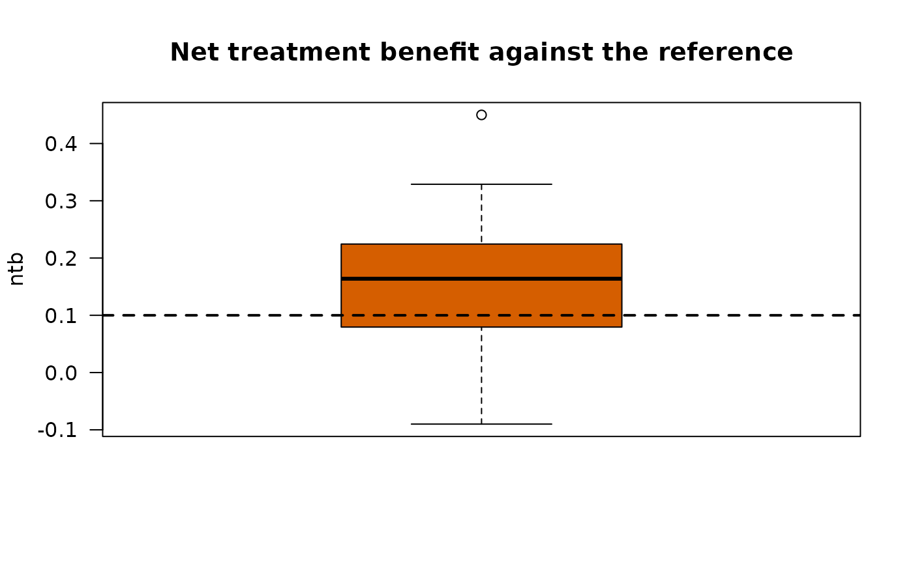
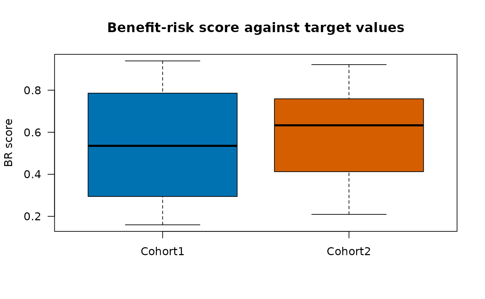

Print and plot the results of simulated trials
Source:R/plot.SimSelection.R, R/print.SimSelection.R
SimSelection-methods.Rdprint() shows the number of simulated trials, the cohorts and the
first rows of the results. plot() draws the distribution of one
statistic over the simulated trials as a box plot for each cohort, with an
optional threshold of a decision rule.
Arguments
- x
Data frame returned by
SimSelection.- statistic
The statistic plotted:
"ntb","ntb_lower","wr","wo","br_diff","br_ref"or"br"(the score against target values, plotted for every cohort including the reference).- threshold
Optional threshold drawn as a dashed line.
- col
Colors of the cohorts (recycled), in the order of the cohorts in
x; a cohort keeps its color whatever the statistic.- main
Title of the plot; by default a description of the statistic.
- ylab
Title of the vertical axis; by default a short name of the statistic, for example "BR difference" or "Win ratio".
- cex.main, cex.lab, cex.axis
Sizes of the title, of the axis titles and of the axis labels, relative to the default size.
- ...
Not used.
- n
Number of rows printed.
- digits
Number of significant digits.
Value
print() returns x invisibly. plot() returns
invisibly a list with the plotted values for each cohort; infinite win
ratios or win odds (no pair lost) are not plotted.
Examples
arms <- list(
Cohort1 = CorOncoEndpoints::OncoArm(pfs.median = 6, orr = 0.30, resp.cor = 0.4,
death.prop = 0.15, os.median = 15),
Cohort2 = CorOncoEndpoints::OncoArm(pfs.median = 8, orr = 0.45, resp.cor = 0.4,
death.prop = 0.15, os.median = 18))
d <- SimCohorts(nsim = 20, n = c(30, 30), arms = arms, ae.rate = c(0.20, 0.35),
cutoff = 24, a.time = c(0, 12), seed = 1)
eps <- list(Endpoint("OS", "tte", time = "os_tte", event = "os_event"),
Endpoint("PFS", "tte", time = "pfs_tte", event = "pfs_event"),
Endpoint("ORR", "binary", var = "response"),
Endpoint("AE", "binary", var = "ae", higher.better = FALSE))
crit <- data.frame(endpoint = c("ORR", "PFS", "AE"), target = c(0.3, 0.5, 0.3),
time = c(NA, 6, NA))
res <- SimSelection(d, eps, crit, reference = "Cohort1")
res
#> 40 rows of results of 20 simulated trials
#> Cohorts: Cohort1 (reference), Cohort2
#> Scoring rule of the pairwise comparisons: Gehan
#>
#> sim group is_reference br adm br_diff p_win p_loss p_tie ntb
#> 1 Cohort1 TRUE 0.355 TRUE NA NA NA NA NA
#> 1 Cohort2 FALSE 0.578 TRUE 0.2231 0.532 0.451 0.01667 0.0811
#> 2 Cohort1 TRUE 0.324 TRUE NA NA NA NA NA
#> 2 Cohort2 FALSE 0.737 TRUE 0.4134 0.602 0.384 0.01333 0.2178
#> 3 Cohort1 TRUE 0.824 TRUE NA NA NA NA NA
#> 3 Cohort2 FALSE 0.592 TRUE -0.2317 0.597 0.373 0.03000 0.2233
#> 4 Cohort1 TRUE 0.219 TRUE NA NA NA NA NA
#> 4 Cohort2 FALSE 0.234 TRUE 0.0152 0.541 0.441 0.01778 0.1000
#> 5 Cohort1 TRUE 0.190 TRUE NA NA NA NA NA
#> 5 Cohort2 FALSE 0.330 TRUE 0.1398 0.488 0.503 0.00889 -0.0156
#> ntb_se ntb_lower wr wo
#> NA NA NA NA
#> 0.149 -0.2095 1.180 1.177
#> NA NA NA NA
#> 0.145 -0.0764 1.566 1.557
#> NA NA NA NA
#> 0.142 -0.0654 1.598 1.575
#> NA NA NA NA
#> 0.148 -0.1895 1.227 1.222
#> NA NA NA NA
#> 0.149 -0.2989 0.969 0.969
#> # ... with 30 more rows
plot(res, "ntb", threshold = 0.1)

plot(res, "br")
